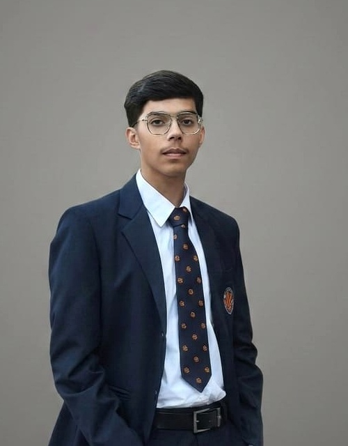

Languages
Python · C · C++ · HTML · CSS · JavaScript
Computer Science Student · Builder
A B.Tech CSE student who enjoys turning ideas into practical digital experiences — from full-stack applications to data-driven solutions.

I’m Aadi Varkia, a Computer Science & Engineering undergraduate at Lovely Professional University (2025 — 2029). I believe in learning by building — turning theoretical concepts into dependable, high-performing digital solutions.
My core interests lie at the intersection of full-stack development, scalable database design, and algorithmic problem-solving. From crafting responsive user experiences to architecting asynchronous REST APIs, implementing Redis caching layers, and working with relational & NoSQL data stores, I enjoy understanding every layer of software development.
Pursuing B.Tech CSE with an 8.27 CGPA. Rigorous coursework in Database Management Systems (DBMS), Data Structures & Algorithms (DSA), and programming fundamentals.
Advancing algorithmic optimization, experimenting with distributed system concepts, and mastering scalable modern web frameworks with clean code practices.
Completed 150 hours of structured Computer Programming covering logical problem-solving, along with certified foundations in Python programming.
Active volunteer with Pathankot Vikas Manch, organizing three community welfare initiatives spanning food donation, health check-ups, and cleanliness campaigns.
To grow as a versatile software engineer who builds dependable, scalable digital products that empower users and create meaningful community impact.
Python · C · C++ · HTML · CSS · JavaScript
React · Node.js · Express · NumPy · Pandas · Chart.js
PostgreSQL · MongoDB
Database Management Systems · Data Structures & Algorithms
Technical Communication · Critical Thinking · Adaptability
A full-stack health and fitness tracking application designed to centralize workout logging, macronutrient tracking and progress analytics.
React · Node.js · Express · PostgreSQL · Redis · Chart.js
Asynchronous data aggregation, rolling 7-day metrics, interactive progress tracking and JWT-based multi-factor authentication.
An interactive performance benchmarking and algorithmic suite designed to visualize graph traversals, sorting complexities, and data structure operations in real time.
Python · JavaScript · React · NumPy · Pandas · Chart.js
Step-by-step call-stack inspection, automated empirical Big-O profiling, custom test-case generation, and real-time execution analytics.
I strengthen my programming foundation through structured learning, problem-solving and practical coding.
National Aeronautics and Space Administration · Sep 2026
Jan 2026 — May 2026
Feb 2026
B.Tech — Computer Science & Engineering
CGPA: 8.27Intermediate
85.8%Matriculation
91.2%Pathankot Vikas Manch
Organized and coordinated three community service drives covering food donation, general health check-ups and cleanliness drives.
JUN 2026 — JUL 2026I pay attention to the small details that make a solution clear, reliable and complete.
I enjoy learning new concepts and improving my technical skills through practice.
I stay focused on my goals and work consistently toward meaningful results.
I value communication, collaboration and contributing positively to a team.
My goal is to become a proficient software engineer, solve meaningful problems, and contribute to technology that empowers communities.